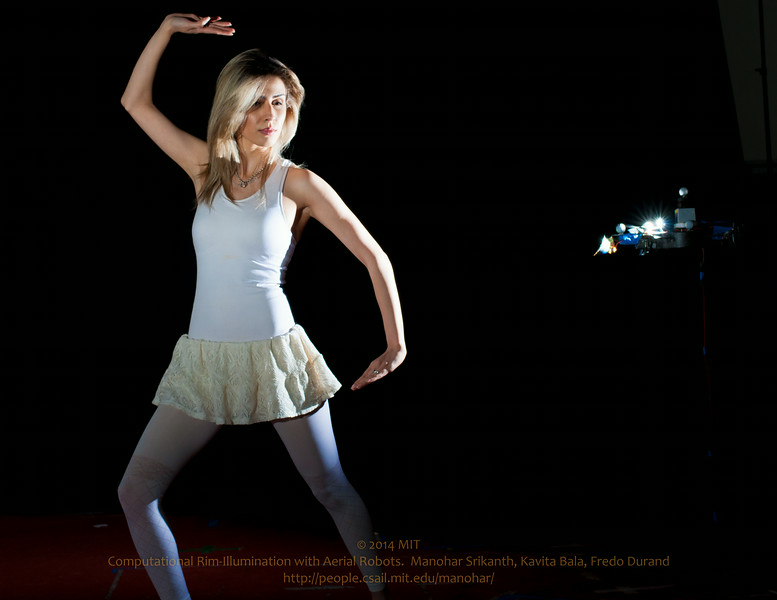

Art & Photography
Photography.
A selection of the work — drone-lit portraits, monochrome studies, deserts, and travel, 2010–2016. Keep scrolling. The full archive lives on SmugMug.

Featured — the signature work
Drone Lighting
Portraits lit by flying robots — my MIT research in computational rim-illumination, published and exhibited. The drone is in the frame because it belongs there.
You’ve seen the whole wall. Everything — including client and event archives — lives at mit.smugmug.com.
ALL PHOTOGRAPHS © MANOHAR SRIKANTH